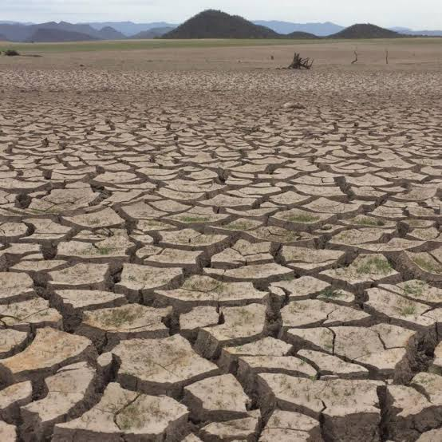
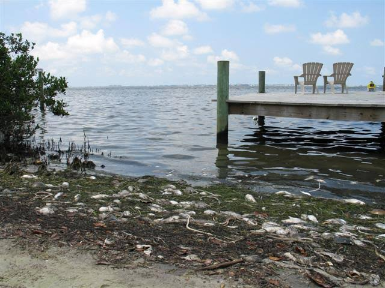

Un desastre natural es un fenómeno causado por la propia naturaleza que puede ser inesperado o recurrente. El impacto que puede provocar a la humanidad va desde afectaciones a sus viviendas, el funcionamiento de los servicios básicos, la trasformación del territorio que habita, hasta la pérdida de vidas humanas.
Los desastres naturales han ocurrido siempre, en todo el mundo y no están precisamente causados por las personas. En ciertos casos el ser humano sí es responsable de estos eventos.
Clasificación de desastres naturales:
Meteorológicos

Son provocados por cambios en el clima que superan los límites esperados.

Son los que afectan directamente a la población en forma de pestes, epidemias y pandemias, en ellos están involucradas bacterias, virus y parásitos que causan enfermedades de difícil control.